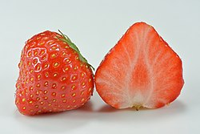

The garden strawberry (or simply strawberry; Fragaria × ananassa)[1] is a widely grown hybrid plant cultivated worldwide for its fruit. The genus Fragaria, the strawberries, is in the rose family, Rosaceae. The fruit is appreciated for its aroma, bright red colour, juicy texture, and sweetness. It is eaten either fresh or in prepared foods such as jam, ice cream, and chocolates. Artificial strawberry flavourings and aromas are widely used in commercial products. Botanically, the strawberry is not a berry, but an aggregate accessory fruit. Each apparent 'seed' on the outside of the strawberry is actually an achene, a botanical fruit with a seed inside it.